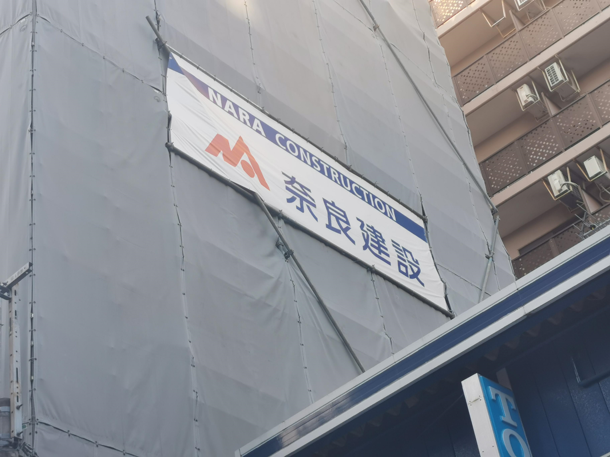
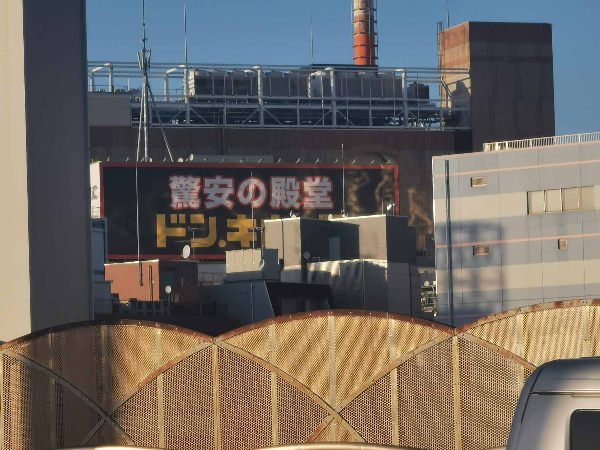
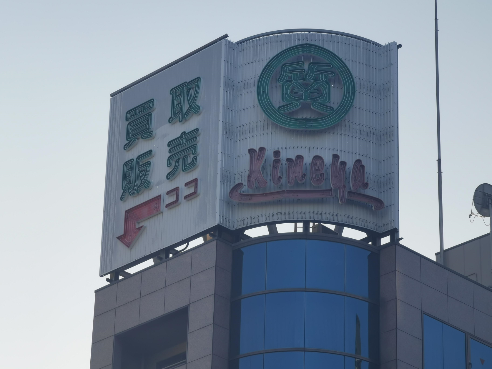

第２回課題
これらの写真は私が10月11日にユニークな看板・サイン探しの散歩に
出かけた際に見つけて撮影したものである。
１枚目
家の付近の奈良建設の工事現場にあった幕
神奈川に奈良を見つけた。

２枚目
ドンキホーテからは少し遠い橋の上から撮影した写真
ドンキホーテの看板が巨大でただの看板としての機能だけでなく
広告の機能も担っていると感じた。

３枚目
有名なラーメン店吉村屋の斜め向かいにあったビルの屋上の看板
ただのよくびるのうえにある看板なのではなく
↴ココと書いてありとても分かりやすく特徴的だと感じた。
